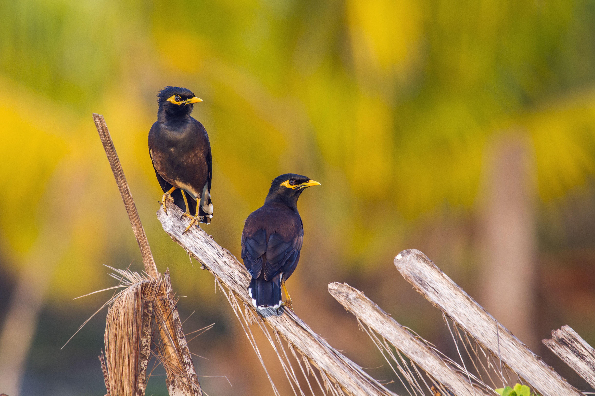
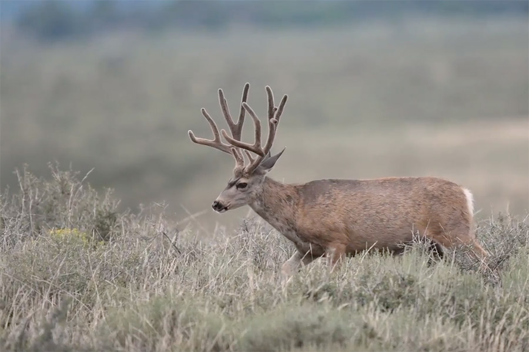
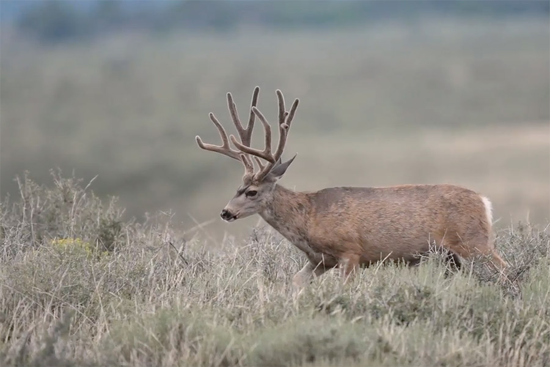

Abhinav Keesara
Photography is something that I love. Since 3rd grade when my mom first bought a camera, I was fascinated by the camera. I take a lot of pictures some, but some of the best pictures I took are of animals and birds. Photography made me a adventurer. My parents would take me camping one summer and I took a lot of photos then. Photography is something that I still love and is one of my favorite hobby.

 
